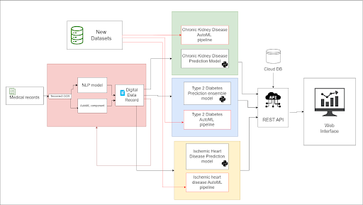

project scope
Literature Survey
Numerous research studies have focused on using machine learning algorithms to predict T2D and its complications. Researchers have utilized different machine-learning approaches to tackle the predictive challenges of T2D. Moreover, they have also explored the realm of AutoML to improve prediction accuracy and to address the challenges of making machine learning accessible to non-experts, allowing them to harness its potential without in-depth data science expertise.
Kumari et al. [1] presented an ensemble ML technique to enhance early-stage diabetes detection. Their method combined random forest, logistic regression, and Naive Bayes algorithms using a soft voting classifier on the Pima Indians Diabetes dataset. The approach achieved top accuracy (79.04%), precision (73.48%), recall (71.45%), and F1-score (80.6%) compared to other methods. They also demonstrated its efficacy in breast cancer prediction, aligning with our work on automated ML for predicting Type 2 diabetes and its complications.
The complexity of medical vocabulary and the varying formatting of medical reports frequently hinder the accuracy of open source OCR tools[]. To overcome, an approach of using pre-processing techniques to clean and improve the extracted text before feeding it into the OCR engine[]. Pre-processing techniques such as DEskewing and noise reduction can enhance image quality and minimize text recognition errors.Initially rule based approach of identification of incorrect words are done by the use open source spell checking libraries pyspellchecker and Hunspell and incorrect words will be masked[]. The masked words will be predicted with a machine learning based approach of using a cutting-edge language model called RoBERTa (Bidirectional Encoder Representations from Transformers) which has been employed for a variety of natural language processing applications, including word prediction[].
project scope
Research Problem & Solution
Research Problem
How to develop Machine Learning based intelligent tool which can predict Type 2 Diabetes and its two most prevalent complications: Chronic Kidney Disease and Ischemic Heart Disease, also with the utilization of AutoML methodologies to automate the machine learning process to make machine learning more accessible, how much will it assist healthcare professionals and general public ? And to what extent will it assist in safeguarding lives ?
Proposed Solution
Predicting an individual’s risk of Type 2 Diabetes and subsequently predicting risk for Chronic Kidney disease and ischemic heart disease (Coronary heart disease) which are NCDs that are caused as complications of Diabetes through machine learning techniques while sing Image processing and NLP techniques to extract medical data from paper based medical records feed data into the trained models when inferencing and employing Automated Machine Learning (AutoML) methodologies to build an automated system where healthcare professionals with no machine learning expertise can perform the Machine learning and prediction process for new datasets.
Research Objectives
Type 2 Diabetes Prediction
- Developing an accurate and adaptive machine learning model for Type 2 Diabetes prediction using ensemble learning techniques.
- Developing the AutoML automation pipeline on top of the ML model to facilitate retraining of the model with new datasets by healthcare professionals without machine learning expertise.
- Deploying the ML model and the AutoML pipelines and creating a web interface to be utilized for inferencing.
OCR System
- Customize and fine-tune the Tesseract OCR engine to optimize its performance specifically for medical record images.
- Implement pre-processing techniques to improve OCR accuracy.
- Devoloping a post-processing NLP model to indentify and rectify incorrect text.
IHD Prediction
- Developing the machine learning model to predict chronic kidney disease risk level.
- Identify the key factors which cause chronic kidney disease and carry out Feature engineering to select only the relevant features and Training the dataset with different ML algorithms.
- Evaluating which ML algorithm best fits the data and carrying out a factor analysis on the data to identify how different lifestyle and biological factors contribute towards CKD risk with the use of Hyperparameter tuning.
- Deployment of the model as an application interface for inferencing and testing by making inferences with the model for new individuals.
- Developing the AutoML pipeline to facilitate a retrainable model with new data for healthcare professionals without ML knowledge.
CKD Prediction
- Develop a machine learning model for predicting ischemic heart disease risk based on clinical and demographic variables, and evaluate its performance and the importance of different variables.
- Develop an automated machine learning pipeline for retraining the model on new data, and assess its scalability, efficiency, and performance compared to existing statistical models.
- Validate the machine learning model and pipeline on a large, diverse, and representative dataset of patients with ischemic heart disease, and explore their clinical implications for improving patient outcomes, reducing costs, and enhancing clinical decision-making, while identifying potential areas for further research and development.
project scope
Methodology
Methodology
The central requirement that emerged from this analysis is the establishment of a seamless mechanism for integrating Automated Machine Learning into the construction of predictive models for Type 2 Diabetes, Chronic Kidney Disease (CKD), and Ischemic Heart Disease (IHD). Concurrently, an Optical Character Recognition (OCR) module was identified as necessary to convert physical health reports and records into digital formats, facilitating more accessible predictive inference. This innovative approach empowers healthcare professionals with the capability to effortlessly train machine learning models on their regional datasets, eliminating the need for extensive technical expertise and labor-intensive efforts. By bridging this gap, our objective is to democratize the application of advanced predictive models in the domain of diabetes management, thereby enhancing accessibility and elevating the standard of patient care.
Timeline
- Project Proposal
- Progress Presentation I
- Progress Presentation II
- Research Paper
- Final report
- Website Assessment
- Logbook
- Final Presentation & Viva


The Team